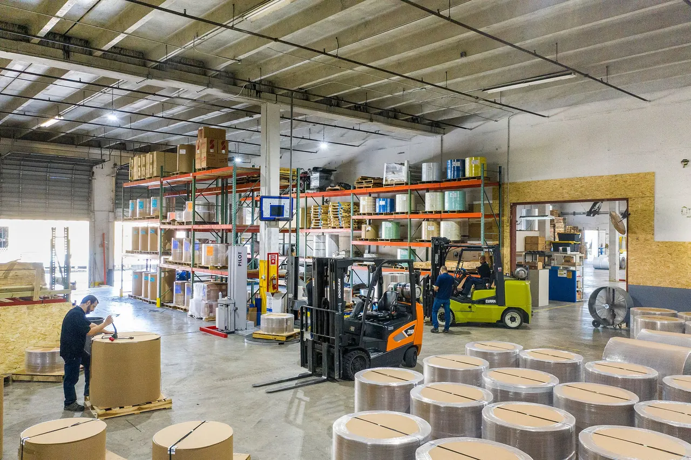
Patirtis
22metai
Nuo 2004 m. Vilniuje priimame, saugome ir išsiunčiame krovinius.
Logistikos terminalas Vilniuje · nuo 2004 m.
Priimame, saugome, paruošiame ir išsiunčiame krovinius. Turime A tipo muitinės sandėlius, geležinkelio atšaką iki pat sandėlių ir krovos techniką iki 10 t, todėl krovinys keliauja be bereikalingų perkrovų ir tarpininkų.
Terminalas skaičiais
Nuosavi sandėliai, muitinė, geležinkelis ir krovos technika: krovinys neperkraunamas tarp skirtingų rangovų, o jūs turite vieną kontaktą.

Patirtis
22metai
Nuo 2004 m. Vilniuje priimame, saugome ir išsiunčiame krovinius.
Krovos technika
1,5–10t
5 autokrautuvai. Tokia kėlimo galia vienai krovinio vietai.
Apsauga
24/7
Vilniuje dabar , teritorija saugoma
Fizinė apsauga, įėjimo kontrolė, vaizdo stebėjimas ir įrašymas.
Muitinė
A tipo
Atviras muitinės sandėlis: ne ES prekės saugomos nesumokėjus muitų ir PVM.
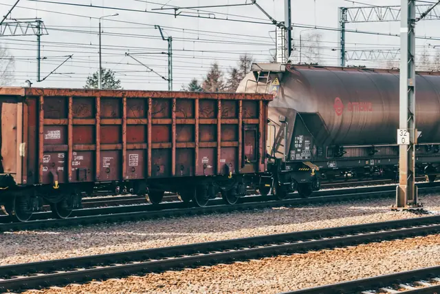
Geležinkelis
Auto ir geležinkelio rampos: vagonus iškrauname tiesiai į sandėlį.
Paslaugos
Devynios paslaugos, sujungtos į vieną grandinę: nuo krovinio atvykimo iki dokumentų ir išsiuntimo. Galite užsakyti visą grandinę arba tik reikalingą jos dalį.
Atvykimas ir krova
Saugojimas
Paruošimas
Dokumentai ir išsiuntimas
Erdvės verslui
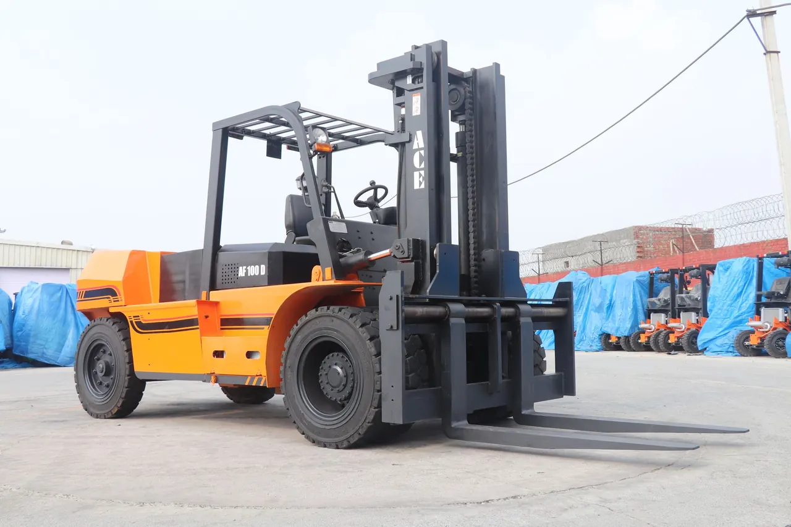
Krovos darbus atliekame su įvairia krovos technika: turime 5 autokrautuvus, kurių kėlimo galia – nuo 1,5 iki 10 tonų vienai krovinio vietai.
Krauname per automobilines ir geležinkelio rampas, todėl sunkvežimį ar vagoną galima iškrauti tiesiai į sandėlį. Moderni krovimo technika leidžia operatyviai dirbti ir su nestandartiniais bei sunkiais kroviniais.
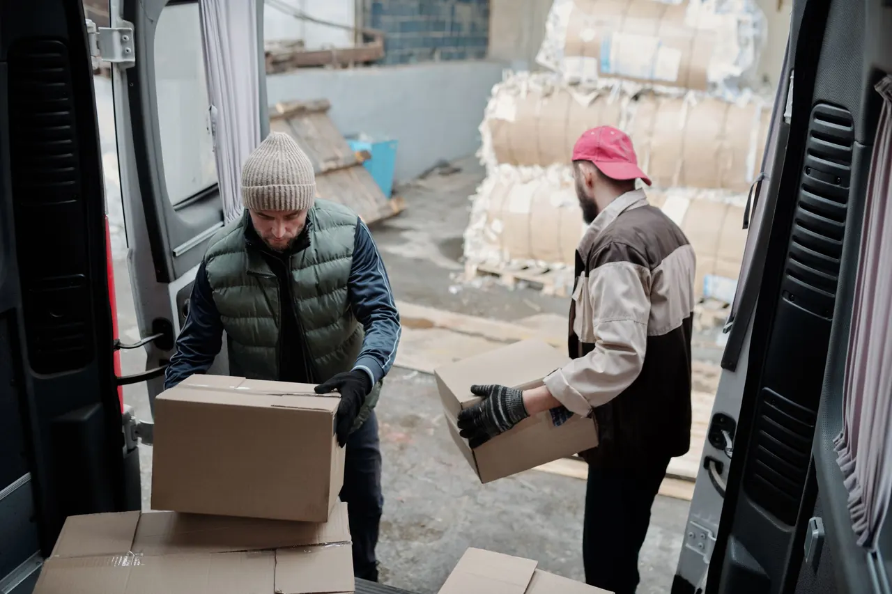
Kvalifikuotas personalas leidžia vienu metu aptarnauti didelį transporto priemonių ir krovinių srautą.
Rankinė krova reikalinga, kai prekės atvyksta ne ant padėklų: sukrautos dėžės, maišai ar smulkios siuntos, kurias reikia perskaičiuoti, sudėti ant padėklų ir paruošti tolesniam vežimui.
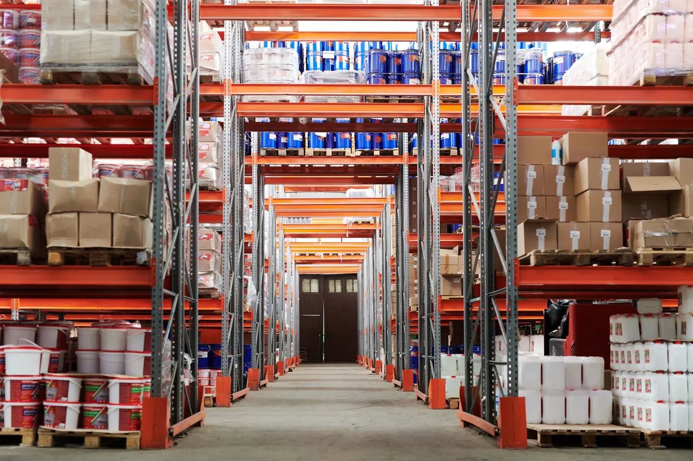
Atviri muitinės sandėliai: juose ne ES prekes gali laikyti Lietuvos ir užsienio fiziniai ar juridiniai asmenys bei kitos organizacijos. Sandėliavimo procedūrų vykdytojas visais atvejais yra muitinės sandėlio savininkas.
Prekės saugomos standartiniuose stelažuose, lentynose arba laisvai sukrautos ant padėklų. Muitinės sandėlis gali pasiūlyti visą paslaugų komplektą:
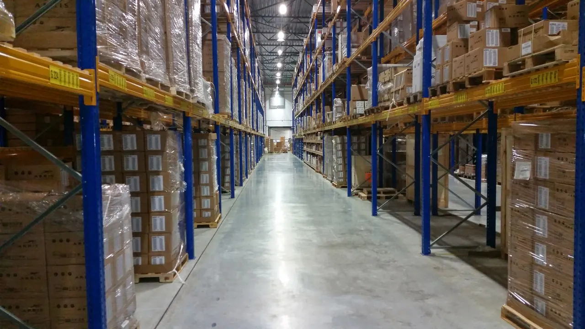
Sandėliai pritaikyti paletinių krovinių ant stelažų ir negabaritinių krovinių sandėliavimui, o didesniems kroviniams yra atviros saugojimo aikštelės.
Prekių saugą teritorijoje ir sandėliuose užtikrina visą parą dirbanti fizinė apsauga, įėjimo kontrolės, skaitmeninio vaizdo stebėjimo ir įrašymo sistemos. Patalpos atitinka priešgaisrinius ir aplinkos apsaugos reikalavimus, turi atitinkamų tarnybų išduotus veiklos leidimus, o sandėlių veikla apdrausta civilinės atsakomybės draudimu.
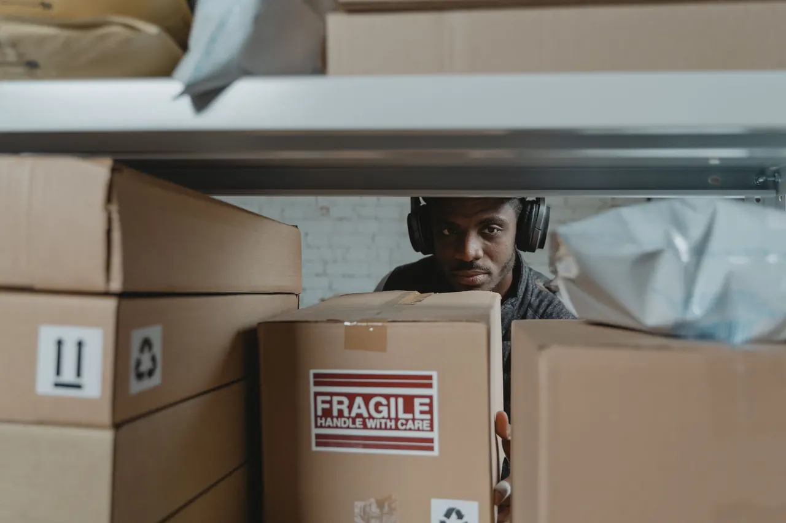
Prekes paruošiame tolesniam pardavimui ar transportavimui čia pat, sandėlyje, todėl jų nereikia vežti kitur.
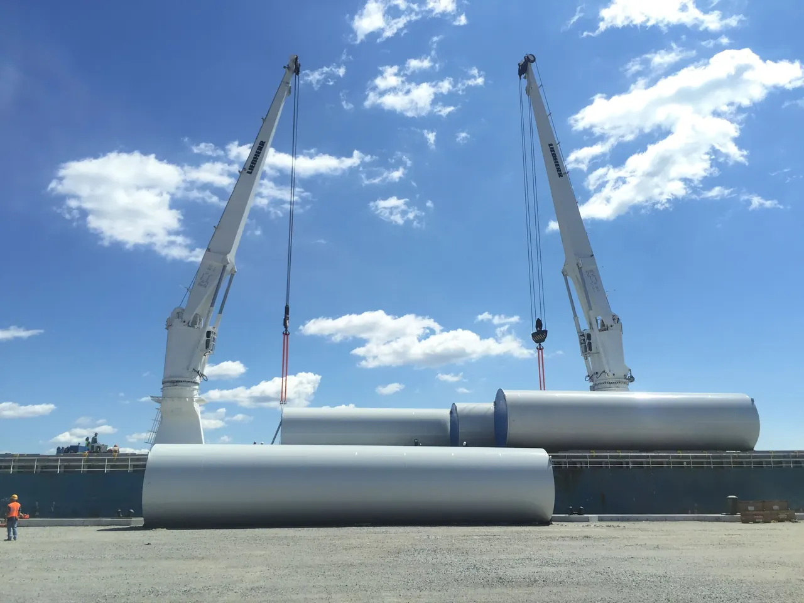
Nestandartinių išmatavimų ar itin sunkių krovinių pervežimai, kai reikalinga speciali technika.
Didelę patirtį turintys darbuotojai parenka tinkamiausią specialų transportą ir maršrutą, suderina reikiamus leidimus, suorganizuoja palydą ir apsaugą bei pasirūpina krovinio saugumu. Už jus sutvarkysime visus privalomuosius muitinės, atvykimo ir išvykimo dokumentus.
Atliekame visas su muitinės veikla susijusias paslaugas, taip pat turime muitinės sandėlį.
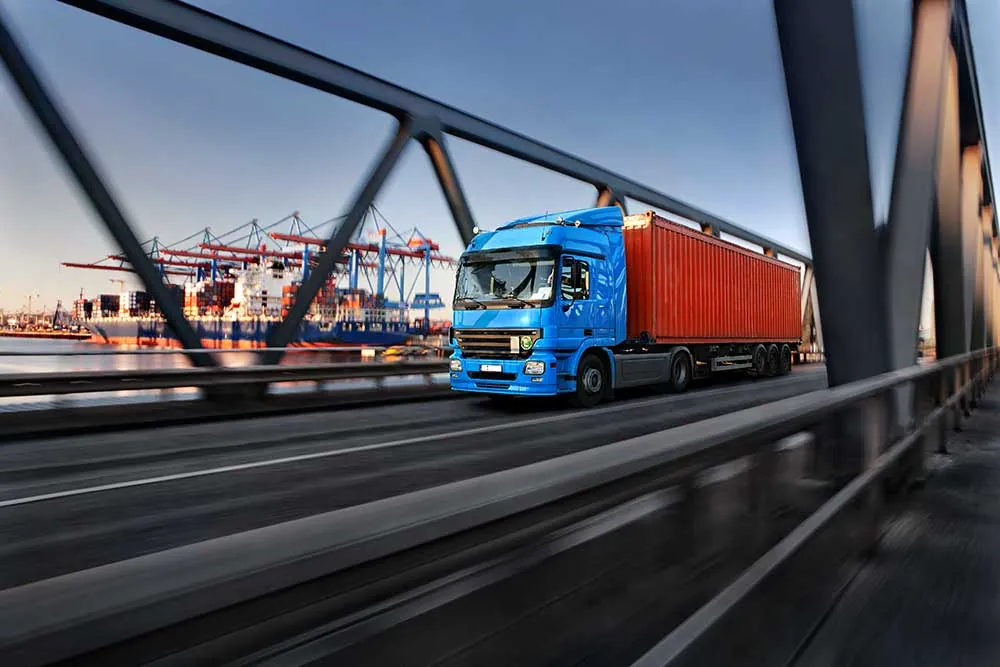
Organizuojame įvairaus dydžio krovinių gabenimą iš ES valstybių ir į jas. Operatyviai reaguojame į kiekvieną užklausą ir esame lankstūs kainų atžvilgiu.
Rūpestingai kontroliuojame kiekvieno krovinio judėjimą ir pristatymo terminus, kasdien suteikiame išsamią informaciją apie tikslią krovinio buvimo vietą. Iškilus problemoms, visada randame kompromisinius sprendimus.
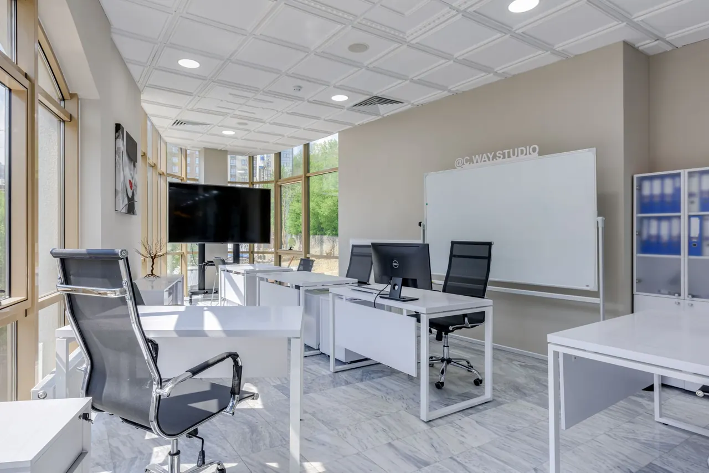
Biurų veiklai įrengtos patalpos įmonėms, fiziniams ir juridiniams asmenims. Bendras patalpų plotas – 1 000 m².
Patalpos yra įvairių plotų, su šildymo, interneto, telefono ir apsaugos paslaugomis, baldais ir sanitarinėmis patalpomis. Čia jau įsikūrusios gamybos, paslaugų, konsultavimo ir kitų sričių įmonės.
Terminalas
Įmonei priklauso A tipo muitinės sandėliai, paprasti sandėliai, atviros krovinių saugojimo aikštelės, automobilinės ir geležinkelio rampos bei administracinės patalpos. Geležinkelio atšaka prieina prie pat sandėlių, todėl klientus aptarnaujame greitai ir patogiai.
V. A. Graičiūno g. 32, Vilnius
Schema iliustracinė: parodo, kas yra teritorijoje, bet ne tikslų išdėstymą.
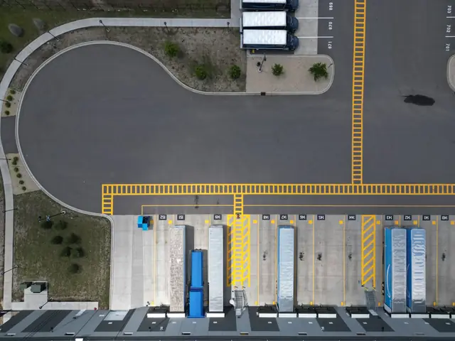
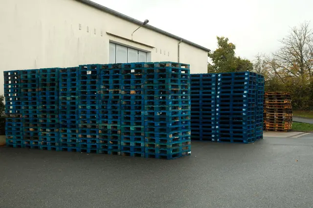
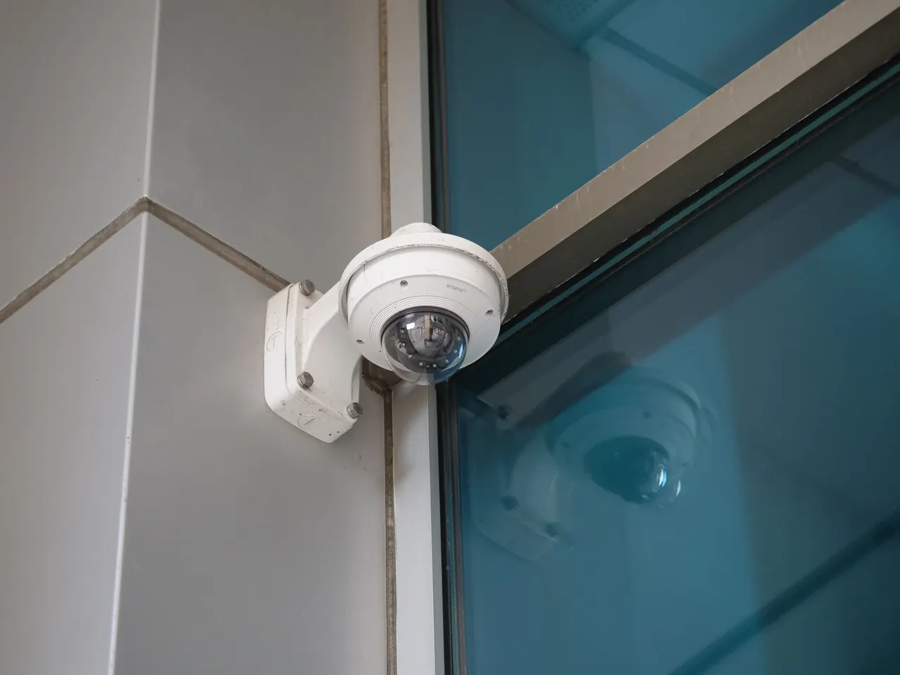
Saugumas ir atsakomybė
Sandėlių logistika turi būti ne tik sklandi, bet ir saugi. Todėl teritoriją saugome visą parą, o atsakomybę prieš klientus ir vežėjus apdraudžiame.
Muitinė
Deklaracijas, tranzitą, sertifikatus ir ataskaitas sutvarkome vietoje, todėl krovinys nelaukia, kol dokumentai keliaus tarp skirtingų įmonių.
Tai atviras muitinės sandėlis: juo gali naudotis bet kuri Lietuvos ar užsienio įmonė ir fizinis asmuo. Ne ES prekės čia saugomos nesumokėjus importo muitų ir PVM, kol nusprendžiate, kada ir kokiai procedūrai jas išleisti. Atsakomybę už sandėliavimo procedūrą visais atvejais prisiima sandėlio savininkas.
Paklausti apie muitinės sandėlįIM / EXT1 / TIRCMREUR.1INTRASTATEXPTAGARKONSEkspedijavimas
Veždami dalinius krovinius, juos surenkame tiesiai iš tiekėjų ir pristatome į konsolidacinį sandėlį Vilniuje arba į mūsų užsienio partnerių terminalus. Konsolidacinis sandėlis – atspirties taškas reguliariai gabenant krovinius tam tikru maršrutu.
Tiekėjai ES
Toliau
Organizuojame įvairaus dydžio krovinių gabenimą iš ES valstybių ir į jas. Kroviniams gabenti naudojamės pastovių ir patikimų partnerių paslaugomis, rūpestingai kontroliuojame kiekvieno krovinio judėjimą ir pristatymo terminus, o kasdien pateikiame informaciją apie tikslią krovinio buvimo vietą.
Patalpų nuoma
Nuomojame gamybinį plotą nuo 100 iki 7 000 m² ir įrengtus biurus toje pačioje saugomoje teritorijoje, šalia sandėlių, rampų ir muitinės.
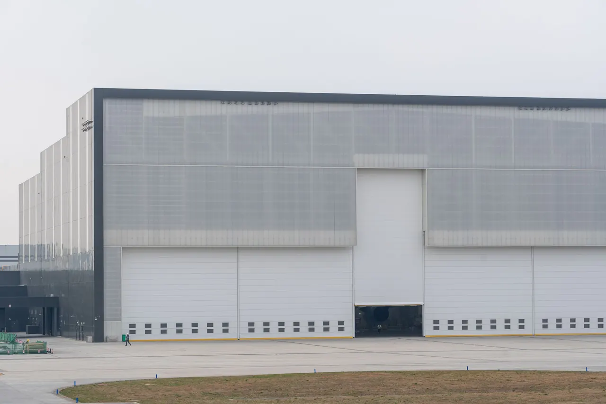
Plotą parenkame pagal poreikį – nuo nedidelės 100 m² patalpos iki 7 000 m².
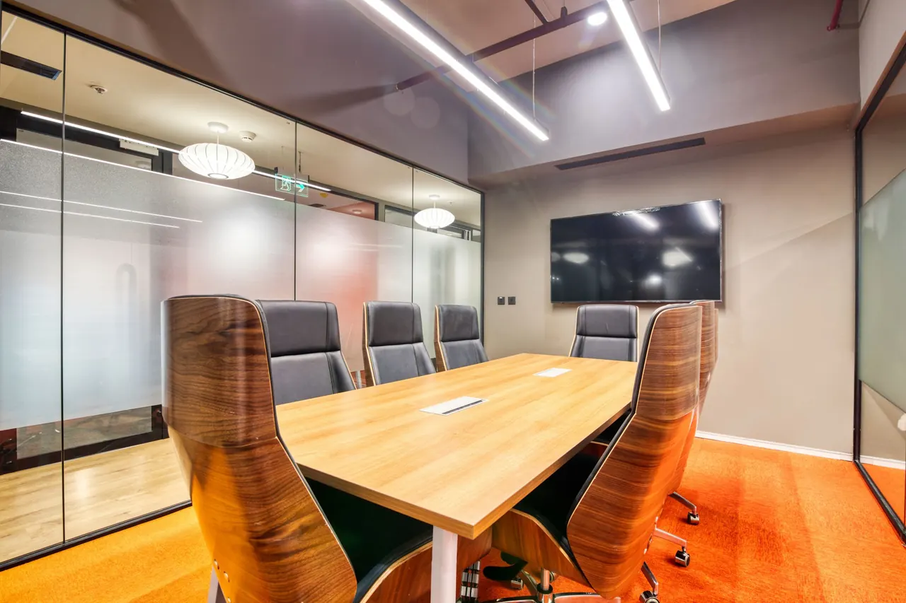
Biurai įmonėms, fiziniams ir juridiniams asmenims. Bendras plotas – 1 000 m², patalpos įvairaus dydžio.
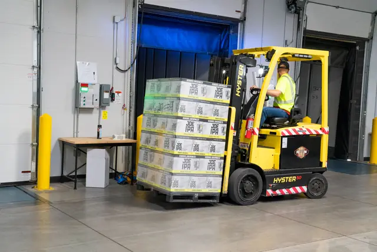
Apie mus
Savo veiklą pradėjome 2004 metais. Per veiklos laikotarpį įmonė sėkmingai dirbo ir vykdė plėtros planus.
Šiandien įmonei priklauso A tipo muitinės sandėliai, paprasti sandėliai paletiniams ir negabaritiniams kroviniams, atviros saugojimo aikštelės, automobilinės ir geležinkelio rampos, geležinkelio atšaka iki pat sandėlių ir administracinės patalpos. Moderni krovimo technika leidžia operatyviai dirbti su nestandartiniais ir sunkiais kroviniais.
Nuosava infrastruktūra reiškia, kad priėmimas, saugojimas, muitinė ir išsiuntimas vyksta vienoje teritorijoje, o jūs turite vieną kontaktą visai grandinei.
Kontaktai